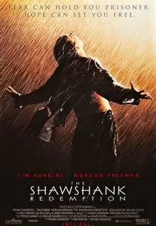

IMDb Chart
IMDb Top 3 Movies
Daftar film dengan rating tertinggi sepanjang masa versi IMDb, disusun berdasarkan penilaian jutaan penonton di seluruh dunia.
Movie Ranking Chart
| Poster | Movie Info |
|---|---|
 |
1. The Shawshank Redemption1994 2h 22m 15 ★★★★★ Rating: 9.3 / 10 (3.1M votes) Two imprisoned men bond over a number of years, finding solace and eventual redemption through acts of common decency. More InformationGenre: Drama Director: Frank Darabont Cast: Tim Robbins, Morgan Freeman |
 |
2. The Godfather1972 2h 55m 15 ★★★★★ Rating: 9.2 / 10 (2.1M votes) The aging patriarch of an organized crime dynasty transfers control of his clandestine empire to his reluctant son. More InformationGenre: Crime, Drama Director: Francis Ford Coppola Cast: Marlon Brando, Al Pacino |
 |
3. The Dark Knight2008 2h 32m 12A ★★★★★ Rating: 9.3 / 10 (3.1M votes) When the menace known as the Joker wreaks havoc on Gotham, Batman must accept one of the greatest psychological tests of his ability to fight injustice. More InformationGenre: Action, Crime, Drama Director: Christopher Nolan Cast: Christian Bale, Heath Ledger |